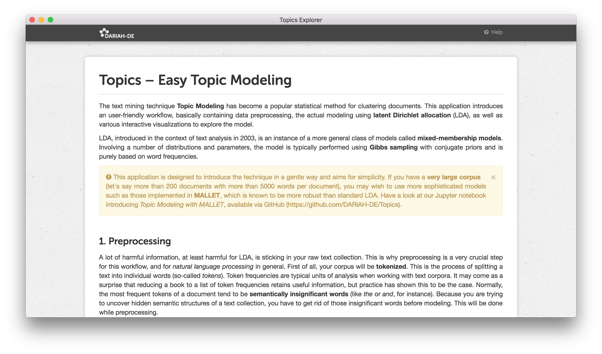

DARIAH Topics Explorer¶
This application presents a user-friendly topic modeling workflow consisting of data preprocessing, the actual modeling with latent Dirichlet allocation, and the visualization of the model output to explore the semantic content of your text collection.
If you do not know anything about topic modeling or programming in general, this is where you start.
Getting started¶
Windows and macOS users do not have to install additional software. The application itself is portable.
- Go to the release-section and download the archive for your OS.
- Extract the content of the archive.
- Run the app by double-clicking the file DARIAH Topics Explorer.
Linux users have to use the source code and install some dependencies, but Windows and macOS users can of course also do this:
- Go to the release-section and download the source code as ZIP archive.
- Unzip the archive, e.g. using
unzipvia the command-line. - Make sure you have Pipenv installed (if not: use
pip3 install --user pipenv). - Run
pipenv installwithin the extracted archive, and afterwardspipenv shell. - To start the application, type
python topicsexplorer.py, and press enter.
Note
If you want to use the sample corpus, you must clone the repository with Git (not download the source code from the release-section). See also section The sample corpus on GitHub.
The application¶
Topics Explorer aims for simplicity and usability. If you are working with a large corpus (let’s say more than 200 documents, 5000 words each document), you may wish to use more sophisticated topic models such as those implemented in MALLET, which is known to be more robust than standard LDA. Have a look at our Jupyter notebook introducing topic modeling with MALLET.
Example visualization¶
The following visualization is based on the distribution of 10 topics over a total of 10 novels (written by Charles Dickens, George Eliot, Joseph Fielding, William Thackeray, and Anthony Trollope). But first of all, the algorithm produces so-called topics:
| Key 1 | Key 2 | Key 3 | Key 4 | Key 5 | |
|---|---|---|---|---|---|
| Topic 1 | captain | lord | whom | over | young |
| Topic 2 | phineas | laura | lord | finn | kennedy |
| Topic 3 | jarndyce | quite | sir | richard | ada |
| Topic 4 | jones | indeed | adams | answered | may |
| Topic 5 | our | these | can | honour | without |
| Topic 6 | lopez | duke | wharton | course | duchess |
| Topic 7 | crawley | george | osborne | rebecca | amelia |
| Topic 8 | peggotty | aunt | mother | steerforth | murdstone |
| Topic 9 | thought | way | too | down | went |
| Topic 10 | tom | adam | maggie | work | tulliver |
These topics describe the semantic structures of a text corpus. Every document of the corpus consists, to a certain degree, of every topic. This distribution is visualized in a heatmap; the darker the blue, the higher the proportion.
DARIAH Topics Explorer allows you to analyze and explore your own text corpora using topic models – without prior knowledge or special prerequisites.
Troubleshooting¶
- Please be patient. Depending on corpus size and number of iterations, the process may take some time, meaning something between some seconds and some hours.
- If you are confronted with any problems regarding the application, use GitHub issues – but suggestions for improvements, wishes, or hints on typos are of course also welcome.
- If you are on a Mac and get an error message saying that the file is from an “unidentified developer”, you can override it by holding control while double-clicking. The error message will still appear, but you will be given an option to run the file anyway.
- For more technical troubleshooting, have a look at the README on GitHub.
Developing¶
If you are interested in the more technical parts, using the development version in general, or even want to contribute, please check out the GitHub page.
About DARIAH-DE¶
DARIAH-DE supports research in the humanities and cultural sciences with digital methods and procedures. The research infrastructure of DARIAH-DE consists of four pillars: teaching, research, research data and technical components. As a partner in DARIAH-EU, DARIAH-DE helps to bundle and network state-of-the-art activities of the digital humanities. Scientists use DARIAH, for example, to make research data available across Europe. The exchange of knowledge and expertise is thus promoted across disciplines and the possibility of discovering new scientific discourses is encouraged.
This application has been developed with support from the DARIAH-DE initiative, the German branch of DARIAH-EU, the European Digital Research Infrastructure for the Arts and Humanities consortium. Funding has been provided by the German Federal Ministry for Research and Education (BMBF) under the identifier 01UG1610J.